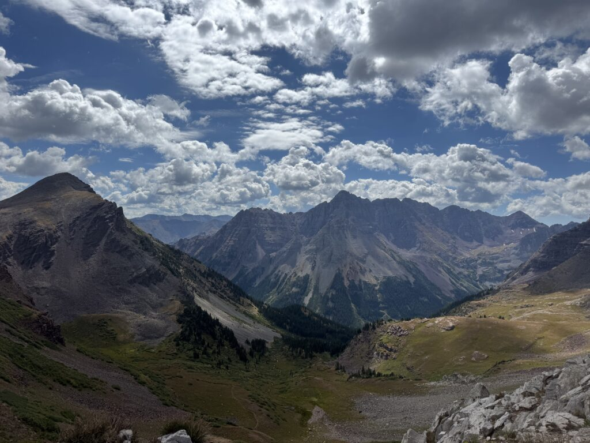
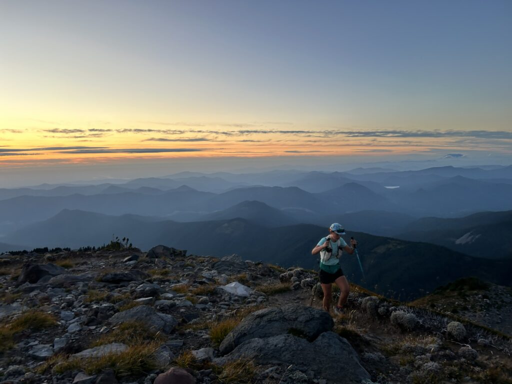
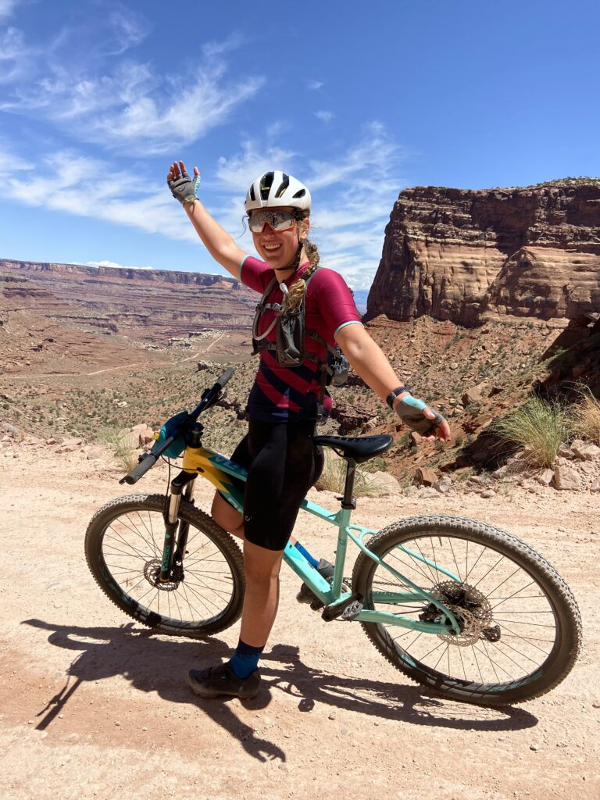

4 Pass Loop, Maroon Bells Snowmass Wilderness
A bucket-list solo mountain run and a big day well spent.
Sport Product Design / Trail Systems / Mountain Athlete
First-year Sport Product Design graduate student at the University of Oregon, based in NE Portland, bringing mathematics, endurance sport, and mountain experience into athlete-first product work.


About Me
Raised in the Pacific Northwest and shaped by Western Colorado, Maddy is a long-distance trail runner, cyclist, skier, and mountain athlete who understands what it means to rely on gear when conditions are anything but easy.
With a background in Mathematics and Outdoor Recreation Industry Studies, she blends analytical rigor with lived outdoor experience to translate performance needs into intentional, functional design.
Her current graduate work focuses on performance-driven products that help athletes move with confidence in the places that matter most.
Selected Portfolio
Adventures
Running from before sunup to after sunset: Maddy's longest day out and first run in Oregon.
Read here
A bucket-list solo mountain run and a big day well spent.

Desert miles, heat, dust, and the kind of terrain that makes product decisions real.